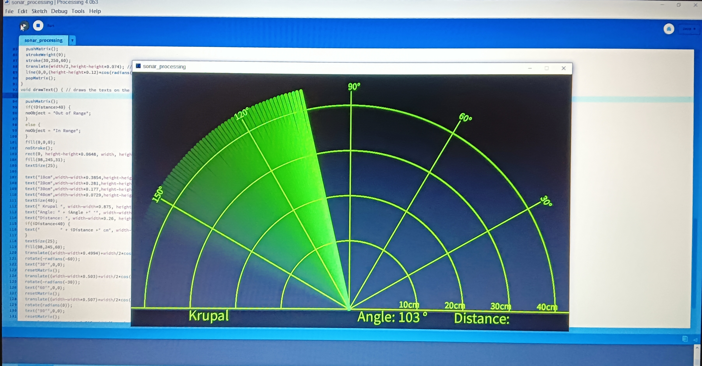
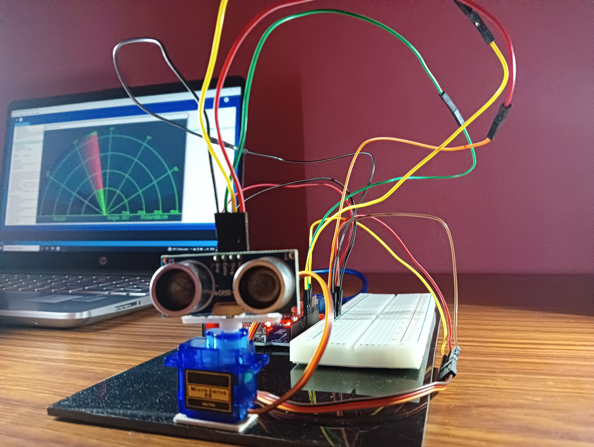
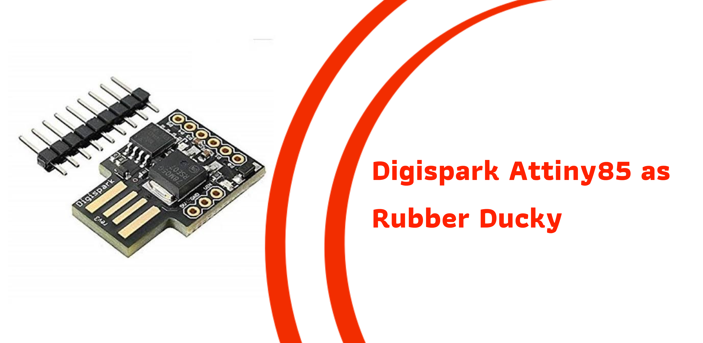
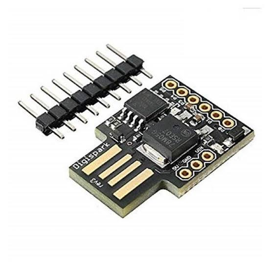

This a android app developed using Python kivy called Geek Notes. This app is a notes app for engineering students, who are facing problem with notes and questiion paper. Even this app provides video playlist based on the subjects and even you guys can give feedback about the app.
This app mainly consists of 4 screens: 1. Home Screen 2. Notes Screen 3. Video Screen 4. Share Screen
Home Screen consists of 3 categories Exam time tables, Question papers, Labratory manuals. Laboratory manuals will be uploaded in further updates.
Notes Screen consists of 2 categories 2018 Scheme and 2021 Scheme. In this screen you guys will find notes of main branches such as Computer Science, Mechanical, Civil, Electronics & Communication and many other.
Video Screen consists videos of each and every subject, if you click on a particular subject, it will redirect you to best YouTube playlist.
Share Screen consists of 3 categories namely Developers, Report a bug, Rate us. These 3 will guide you to the new page where you can contact developers directly, report a bug in the app and you can rate our app.
A responsive website to map from your location to your destination.
A map is a symbolic depiction emphasizing relationships between elements of some space, such as objects, regions, or themes. Generally, we use maps as a reference to show political boundaries, landforms, water bodies, and the positions of cities. Maps also help us to know the routes of an area, landmarks, location (latitudes and longitudes) of a building or things, etc.
Here it compares the price of different transportation modes such as OLA, Uber, Rapido, Metro and BMTC, as far as now this site only maps the direction from your location to the destination and displays the time and distance by using these modes traffic, driving, walking and cycling.
Code is available on my GitHub
Object Detector


Object detector using sonar sensor, a arduino based project.
The requirements for this are: Hardware: 1. Arduino UNO 2. Ultrasonic sensor 3. Jumper Wires 4. Breadboard 5. Servo motor
With the use of ultrasonic sensors, objects can be detected and the distance can be measured from the sensors and it can also be displayed using the lcd screen.
object detector.cpp
// Includes the Servo library
#include .
// Defines Tirg and Echo pins of the Ultrasonic Sensor
const int trigPin = 10;
const int echoPin = 11;
// Variables for the duration and the distance
long duration;
int distance;
Servo myServo; // Creates a servo object for controlling the servo motor
void setup() {
pinMode(trigPin, OUTPUT); // Sets the trigPin as an Output
pinMode(echoPin, INPUT); // Sets the echoPin as an Input
Serial.begin(9600);
myServo.attach(12); // Defines on which pin is the servo motor attached
}
void loop() {
// rotates the servo motor from 15 to 165 degrees
for(int i=15;i<=165;i++){
myServo.write(i);
delay(30);
distance = calculateDistance();// Calls a function for calculating the distance measured by the Ultrasonic sensor for each degree
Serial.print(i); // Sends the current degree into the Serial Port
Serial.print(","); // Sends addition character right next to the previous value needed later in the Processing IDE for indexing
Serial.print(distance); // Sends the distance value into the Serial Port
Serial.print("."); // Sends addition character right next to the previous value needed later in the Processing IDE for indexing
}
Complete code is available on my GitHub
Digispark-ATTINY85


Digispark is an ATtiny85 based microcontroller development board come with USB interface.
Here I have introduced to open chrome and browse multiple results and download a specific image/picture. And save in your computer. This code is usefull only when you have a programmable DIGISPARK ATTINY85 board.
And is tested on Windows 10.
digispark.cpp
#include "DigiKeyboard.h"
void setup() {
// don't need to set anything up to use DigiKeyboard
}
void loop() {
// this is generally not necessary but with some older systems it seems to
// prevent missing the first character after a delay:
DigiKeyboard.sendKeyStroke(0);
DigiKeyboard.sendKeyStroke(KEY_R, MOD_GUI_LEFT);
DigiKeyboard.delay(500);
// Type out this string letter by letter on the computer (assumes US-style
// keyboard)
DigiKeyboard.print("chrome");
DigiKeyboard.delay(500);
DigiKeyboard.sendKeyStroke(KEY_ENTER);
DigiKeyboard.sendKeyStroke(KEY_ENTER);
// It's better to use DigiKeyboard.delay() over the regular Arduino delay()
// if doing keyboard stuff because it keeps talking to the computer to make
// sure the computer knows the keyboard is alive and connected
DigiKeyboard.delay(5000);
DigiKeyboard.println("neymar");
DigiKeyboard.delay(1000);
DigiKeyboard.sendKeyStroke(KEY_ENTER);
DigiKeyboard.delay(5000);
DigiKeyboard.sendKeyStroke(KEY_K, MOD_CONTROL_LEFT);}
Complete code is available on my GitHub
"For more amazing and exiting projets refer my GitHub"